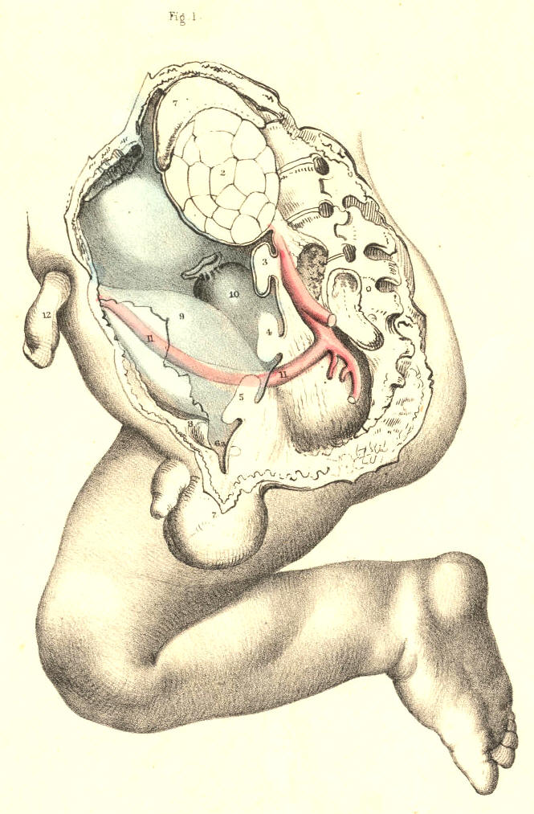
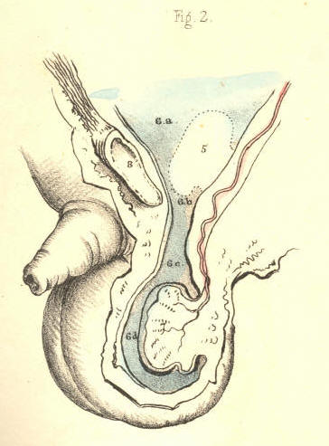
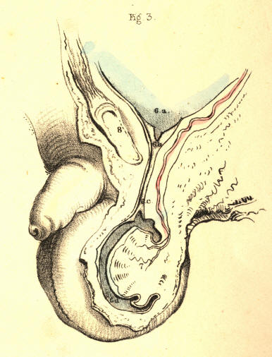
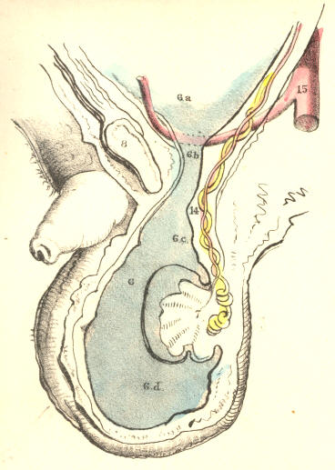
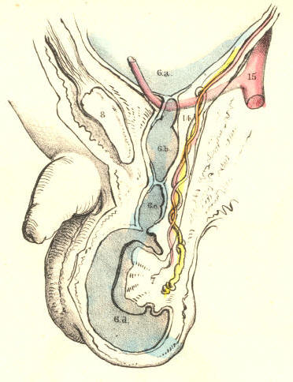
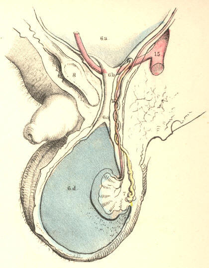
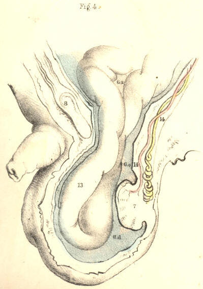
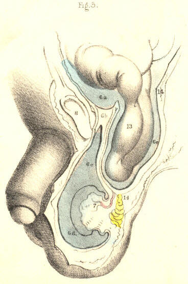
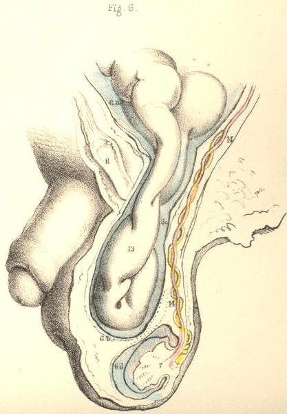

SURGICAL ANATOMY by JOSEPH MACLISE
COMMENTARY ON PLATES 39 & 40.
DEMONSTRATIONS OF THE NATURE OF CONGENITAL AND
INFANTILE INGUINAL HERNIAE, AND OF HYDROCELE.
PLATE 39. Fig. 1--The descent of the
testicle from the loins to the
scrotum.--The foetal abdomen
and scrotum form one general cavity, and
are composed of parts which are structurally identical. The cutaneous,
fascial, muscular, and membranous layers of the abdominal parietes are
continued into those of the scrotum. At the fifth month of foetal life,
the testicle, 3, is situated in the loins beneath the kidney, 2. The
testicle is then numbered amongst the abdominal viscera, and, like
these, it is developed external to the peritonaeal membrane, which forms
an envelope for it. At the back and sides of the testicle, where the
peritonaeum is reflected from it, a small membranous fold or mesentery
(mesorchium, Seiler) is
formed, and between the layers of this the
nerves and vessels enter the organ, the nerves being derived from the
neighbouring sympathetic ganglia (aortic plexus), while the arteries and
veins spring directly from the main abdominal bloodvessels. It being
predetermined that the testicle, 3, should migrate from the loins to the
scrotum, 6 a, 7, at a period
included between the sixth and ninth month,
certain structural changes are at this time already effected for its
sure and easy passage. By the time that the testis, 5, is about to enter
the internal inguinal ring, 6 a,
(seventh or eighth month,) a process or
pouch of the peritonaeal membrane (processus vaginalis) has already
descended through this aperture into the scrotum, and the testicle
follows it.
The descent of the testis is effected by a very slow and gradual process
of change. (Tout va par degres dans la nature, et rien par
sauts.--Bonnet.) But how, or
by what distinct and active structural
agent, this descent is effected, or whether there does exist, in fact,
any such agent as that which anatomists name "gubernaculum testis," are
questions which appear to me by no means settled.[Footnote]
[Footnote: Dr. Carpenter (Principles of Human Physiology)
remarks, that
"the cause of this descent is not very clear. It can scarcely be due
merely, as some have supposed, to the contraction of the gubernaculum,
since that does not contain any fibrous structure until after the
lowering of the testis has commenced." Dr. Sharpey (Quain's Anatomy, 5th
edition) observes, that "the office of the gubernaculum is yet
imperfectly understood." The opinions of these two distinguished
physiologists will doubtless be regarded as an impartial estimate of the
results of the researches prosecuted in reference to these questions by
Haller, Camper, Hunter, Arnaud, Lobstein, Meckel, Paletta, Wrisberg,
Vicq d'Azyr, Brugnone, Tumiati, Seiler, Girardi, Cooper, Bell, Weber,
Carus, Cloquet, Curling, and others. From my own observations, I am led
to believe that no such muscular structure as a gubernaculum exists, and
therefore that the descent of the testis is the effect of another cause.
Leaving these matters, however, to the consideration of the
physiologist, it is sufficient for the surgeon to know that the testis
in its transition derives certain coverings from the parietes of the
groin, and that a communication is thereby established between the
scrotal and abdominal cavities. ]
The general lining membrane of the foetal abdomen is composed of two
layers--an outer one of fibrous, and an inner one of serous structure.
Of these two layers, the abdominal viscera form for themselves a double
envelope. [Footnote] The testis in the loins has a covering from
both
membranes, and is still found to be enclosed by both, even when it has
descended to the scrotum. The two coverings of fibro-serous structure
which surrounded the testis in the loins become respectively the tunica
albuginea and tunica vaginalis when the gland occupies the scrotal
cavity.
[Footnote: Langenbeck describes the peritonaeum as consisting of two
layers; one external and fibrous, another internal and serous. By the
first, he means, I presume, that membrane of which the transversalis and
iliac fasciae are parts. (See Comment. de Periton. Structura, &c.) ]

Plate 39--Figure 1
PLATE 39, Fig. 2.--The testicle in
the scrotum.--When the testicle, 5,
descends into the scrotum, 7, which happens in general at the time of
birth, the abdomino-scrotal fibro-serous membrane, 6 a, 6 d, is still
continuous at the internal ring, 6 b.
From this point downwards, to a
level with the upper border of the testicle, the canal of communication
between the scrotal cavity and the abdomen becomes elongated and
somewhat constricted. At this part, the canal itself consists, like the
abdominal membrane above and the scrotal membrane below, of a fibrous
and serous layer, the latter enclosed within the former. The serous
lining of this canal is destined to be obliterated, while the outer
fibrous membrane is designed to remain in its primitive condition. When
the serous canal contracts and degenerates to the form of a simple cord,
it leaves the fibrous canal still continuous above with the fibrous
membrane (transversalis fascia) of the abdomen, and below with the
fibrous envelope (tunica albuginea) of the testis; and at the adult
period, this fibrous canal is known as the internal spermatic sheath, or
infundibuliform fascia enclosing the remains of the serous canal,
together with the spermatic vessels, &c.

Plate 39--Figure 2
PLATE 39, Fig. 3.--The serous tunica
vaginalis is separated from the
peritonaeum.--When the
testicle, 7, has descended to the scrotum, the
serous tube or lining of the inguinal canal and cord, 6 b, 6 c, closes
and degenerates into a simple cord, (infantile spermatic cord,) and
thereby the peritonaeal sac, 6 a,
becomes distinct from the serous
tunica vaginalis, 6 d. But
the fibrous tube, or outer envelope of the
inguinal canal, remains still pervious, and continues in this condition
throughout life. In the adult, we recognise this fibrous tube as the
infundibuliform fascia of the cord, or as forming the fascia propria of
an external inguinal hernia. The anterior part of the fibrous spermatic
tube descends from the fascia transversalis; the posterior part is
continuous with the fascia iliaca. In relation to the testicle, the
posterior part will be seen to be reflected over the body of the gland
as the tunica albuginea, while the anterior part blends with the
cellular tissue of the front wall of the scrotum. The tunica vaginalis,
6 d, is now traceable as a
distinct sac,[Footnote] closed on all sides,
and reflected from the fore part of the testicle, above and below, to
the posterior aspect of the front wall of the scrotum.
[Footnote: Mr. Owen states that the Chimpanzee alone, amongst brute
animals, has the tunica vaginalis as a distinct sac.]

Plate 39--Figure 3
PLATE 40, Fig. 1.--The
abdomino-scrotal serous lining remains continuous
at the internal ring, and a
congenital hydrocele is formed.--When the
serous spermatic tube, 6 b, 6
c, remains pervious and
continuous above
with the peritonaeum, 6 a,
and below with the serous tunica vaginalis, 6
d, the serous fluid of the
abdomen will naturally gravitate to the most
depending part--viz., the tunica vaginalis; and thus a hydrocele is
formed. This kind of hydrocele is named congenital, owing to the
circumstance that the natural process of obliteration, by which the
peritonaeum becomes separated from the tunica vaginalis, has been, from
some cause, arrested. [Footnote 1] As long as the canal of
communication, 6 b, 6 c, between the tunica vaginalis, 6 d, and the
peritonaeum 6 a, remains
pervious, which it may be throughout life, this
form of hydrocele is, of course, liable to occur. It may be diagnosed
from diseased enlargements of the testicle, by its transparency, its
fluctuation, and its smooth, uniform fulness and shape, besides its
being of less weight than a diseased testis of the same size would be.
It may be distinguished from the common form of hydrocele of the
isolated tunica vaginalis by the fact, that pressure made on the scrotum
will cause the fluid to pass freely into the general cavity of the
peritonaeum. As the fluid distends the tunica vaginalis, 6 c, 6 d, in
front of the testis, this organ will of course lie towards the back of
the scrotum, and therefore, if it be found necessary to evacuate the
fluid, the puncture may be made with most safety in front of the
scrotum. If ascites should form in an adult in whom the tunica vaginalis
still communicates with the peritonaeal sac, the fluid which accumulates
in the latter membrane will also distend the former, and all the
collected fluid may be evacuated by tapping the scrotum. When a
hydrocele is found to be congenital, it must be at once obvious that to
inject irritating fluids into the tunica vaginalis (the radical cure) is
inadmissible. In an adult, free from all structural disease, and in whom
a congenital hydrocele is occasioned by the gravitation of the ordinary
serous secretion of the peritonaeum, a cure may be effected by causing
the obliteration of the serous spermatic canal by the pressure of a
truss. When a congenital hydrocele happens in an infant in whom the
testicle, 5, Fig. 1, Plate 39, is arrested in the inguinal canal,
[Footnote 2] if pressure be made on this passage with a view of causing
its closure, the testicle will be prevented from descending.
[Footnote 1: The serous spermatic tube remains open in all quadrupeds;
but their natural prone position renders them secure against hydrocele
or hernial protrusion. It is interesting to notice how in man, and the
most anthropo-morphous animals, where the erect position would subject
these to the frequent accident of hydrocele or hernia, nature causes the
serous spermatic tube to close.]
[Footnote 2: In many quadrupeds (the Rodentia and Monotremes) the testes
remain within the abdomen. In the Elephant, the testes always occupy
their original position beneath the kidneys, in the loins. Human adults
are occasionally found to be "testi-conde;" the testes being situated
below the kidneys, or at some part between this position and the
internal inguinal ring. Sometimes only one of the testes descends to the
scrotum.]

Plate 40--Figure 1.
PLATE 40, Fig. 2.--The serous
spermatic canal closes imperfectly, so as
to become sacculated, and thus a
hydrocele of the cord is formed.--After
the testicle, 7, has descended to the scrotum, the sides of the serous
tube, or lining of the inguinal canal and cord, 6 b, 6 c, may become
adherent at intervals; and the intervening sacs of serous membrane
continuing to secrete their proper fluid, will occasion a hydrocele of
the cord. This form of hydrocele will differ according to the varieties
in the manner of closure; and these may take place in the following
modes:--1st, if the serous tube close only at the internal ring, 6 a,
while the lower part of it, 6 b,
6 c, remains pervious, and
communicating with the tunica vaginalis, 6 d, a hydrocele will be formed
of a corresponding shape; 2nd, if the tube close at the upper part of
the testicle, 6 c, thus
isolating the tunica vaginalis, 6 d,
while the
upper part, 6 b, remains
pervious, and the internal ring, 6 a,
open, and
communicating with the peritonaeal sac, a hydrocele of the cord will
happen distinct from the tunica vaginalis; or this latter may be, at the
same time, distended with fluid, if the disposition of the subject be
favourable to the formation of dropsy; 3rd, the serous tube may close at
the internal ring, form sacculi along the cord, and close again at the
top of the testicle, thus separating the tunica vaginalis from the
abdomen, and thereby several isolated hydroceles may be formed. If in
this condition of the parts we puncture one of the sacs for the
evacuation of its contents, the others, owing to their separation, will
remain distended.

Plate 40--Figure 2.
PLATE 40, Fig. 3.--Hydrocele of the
isolated tunica vaginalis.--When the
serous spermatic tube, 6 b, 6
c, becomes obliterated,
according to the
normal rule, after the descent of the testicle, 7, the tunica vaginalis,
6 d, is then a distinct
serous sac. If a hydrocele form in this sac, it
may be distinguished from the congenital variety by its remaining
undiminished in bulk when the subject assumes the horizontal position,
or when pressure is made on the tumour, for its contents cannot now be
forced into the abdomen. The testicle, 7, holds the same position in
this as it does in the congenital hydrocele. [Footnote] The radical cure
may be performed here without endangering the peritonaeal sac.
Congenital hydrocele is of a cylindrical shape; and this is mentioned as
distinguishing it from isolated hydrocele of the tunica vaginalis, which
is pyriform; but this mark will fail when the cord is at the same time
distended, as it may be, in the latter form of the complaint.
[Footnote: When a hydrocele is interposed between the eye and a strong
light, the testis appears as an opaque body at the back of the tunica
vaginalis. But this position of the organ is, from several causes,
liable to vary. The testis may have become morbidly adherent to the
front wall of the serous sac, in which case the hydrocele will distend
the sac laterally. Or the testis may be so transposed in the scrotum,
that, whilst the gland occupies its front part, the distended tunica
vaginalis is turned behind. The tunica vaginalis, like the serous
spermatic tube, may, in consequence of inflammatory fibrinous effusion,
become sacculated-multilocular, in which case, if a hydrocele form, the
position of the testis will vary accordingly.--See Sir Astley Cooper's
work, ("Anatomy and Diseases of the Testis;") Morton's "Surgical
Anatomy;" Mr. Curling's "Treatise on Diseases of the Testis;" and also
his article "Testicle," in the Cyclopaedia of Anatomy and Physiology.]

Plate 40--Figure 3.
PLATE 40, Fig. 4.--The serous
spermatic tube remaining pervious, a
congenital hernia is formed.--When
the testicle, 7, has descended to the
scrotum, if the communication between the peritonaeum, 6 a, and the
tunica vaginalis, 6 c, be not
obliterated, a fold of the intestine, 13,
will follow the testicle, and occupy the cavity of the tunica vaginalis,
6 d. In this form of hernia
(hernia tunicae vaginalis, Cooper),
the
intestine is in front of, and in immediate contact with, the testicle.
The intestine may descend lower than the testicle, and envelope this
organ so completely as to render its position very obscure to the touch.
This form of hernia is named congenital, since it occurs in the same
condition of the parts as is found in congenital hydrocele--viz., the
inguinal ring remaining unclosed. It may occur at any period of life, so
long as the original congenital defect remains. It may be distinguished
from hydrocele by its want of transparency and fluctuation. The impulse
which is communicated to the hand applied to the scrotum of a person
affected with scrotal hernia, when he is made to cough, is also felt in
the case of congenital hydrocele. But in hydrocele of the separate
tunica vaginalis, such impulse is not perceived. Congenital hernia and
hydrocele may co-exist; and, in this case, the diagnostic signs which
are proper to each, when occurring separately, will be so mingled as to
render the precise nature of the case obscure.

Plate 40--Figure 4.
PLATE 40, Fig. 5.--Infantile hernia.--When
the serous spermatic tube
becomes merely closed, or obliterated at the inguinal ring, 6 b, the
lower part of it, 6 c, is
pervious, and communicating with the tunica
vaginalis, 6 d. In
consequence of the closure of the tube at the
inguinal ring, if a hernia now occur, it cannot enter the tunica
vaginalis, and come into actual contact with the testicle. The hernia,
13, therefore, when about to force the peritonaeum, 6 a, near the closed
ring, 6 b, takes a distinct
sac or investment from this membrane. This
hernial sac, 6 e, will vary
as to its position in regard to the tunica
vaginalis, 6 d, according to
the place whereat it dilates the
peritonaeum at the ring. The peculiarity of this hernia, as
distinguished from the congenital form, is owing to the scrotum
containing two sacs,--the tunica vaginalis and the proper sac of the
hernia; whereas, in the congenital variety, the tunica vaginalis itself
becomes the hernial sac by a direct reception of the naked intestine. If
in infantile hernia a hydrocele should form in the tunica vaginalis, the
fluid will also distend the pervious serous spermatic tube, 6 c, as far
up as the closed internal ring, 6 b,
and will thus invest and obscure
the descending herniary sac, 13. This form of hernia is named infantile
(Hey), owing to the congenital
defect in that process, whereby the
serous tube lining the cord is normally obliterated. Such a form of
hernia may occur at the adult age for the first time, but it is still
the consequence of original default.

Plate 40--Figure 5.
PLATE 40, Fig. 6.--Oblique inguinal
hernia in the adult.--This variety
of hernia occurs not in consequence of any congenital defect, except
inasmuch as the natural weakness of the inguinal wall opposite the
internal ring may be attributed to this cause. The serous spermatic tube
has been normally obliterated for its whole length between the internal
ring and the tunica vaginalis; but the fibrous tube, or spermatic
fascia, is open at the internal ring where it joins the transversalis
fascia, and remains pervious as far down as the testicle. The intestine,
13, forces and distends the upper end of the closed serous tube; and as
this is now wholly obliterated, the herniary sac, 6 c, derived anew from
the inguinal peritonaeum, enters the fibrous tube, or sheath of the
cord, and descends it as far as the tunica vaginalis, 6 d, but does not
enter this sac, as it is already closed. When we compare this hernia,
Fig. 6, Plate 40, with the infantile variety, Fig. 5, Plate 40, we find
that they agree in so far as the intestinal sac is distinct from the
tunica vaginalis; whereas the difference between them is caused by the
fact of the serous cord remaining in part pervious in the infantile
hernia; and on comparing Fig. 6, Plate 40, with the congenital variety,
Fig. 4, Plate 40, we see that the intestine has acquired a new sac in
the former, whereas, in the latter, the intestine has entered the tunica
vaginalis. The variable position of the testicle in Figs. 4, 5, & 6,
Plate 40, is owing to the variety in the anatomical circumstances under
which these herniae have happened.

Plate 40--Figure 6.
COMMENTARY ON PLATES 41
& 42